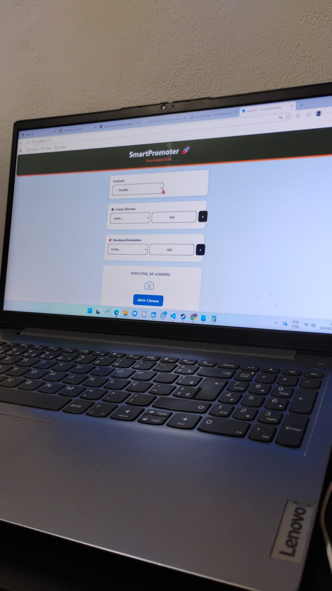
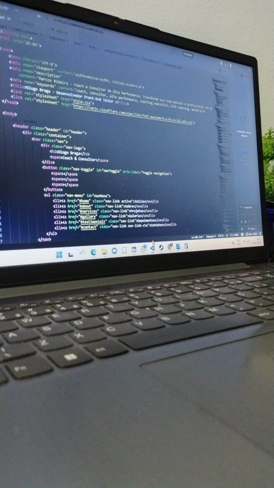
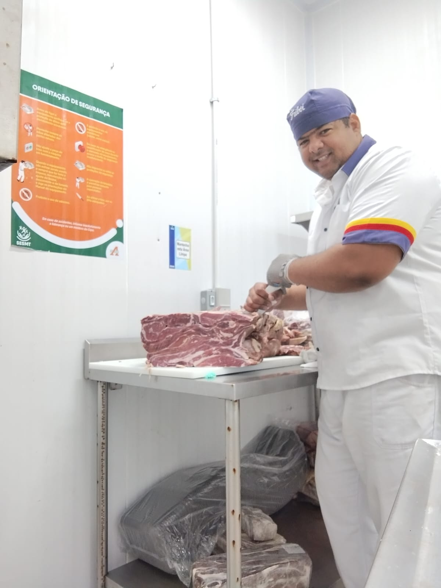
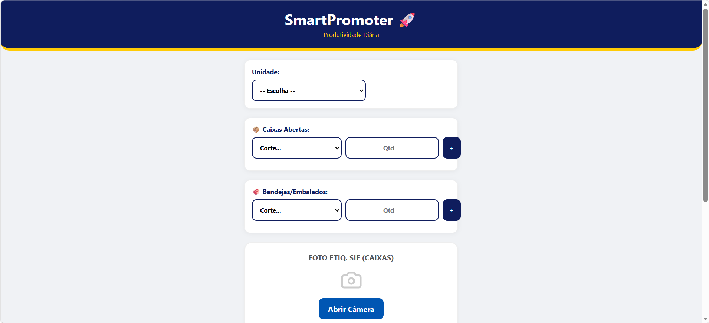
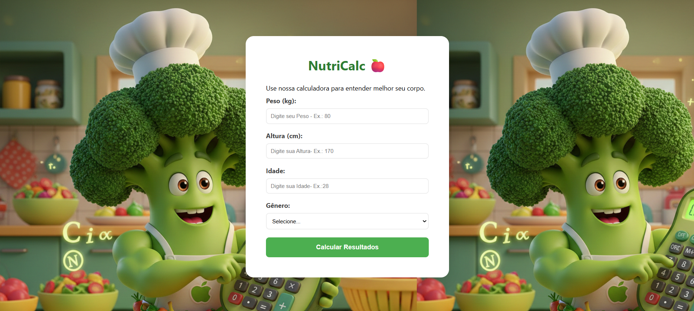
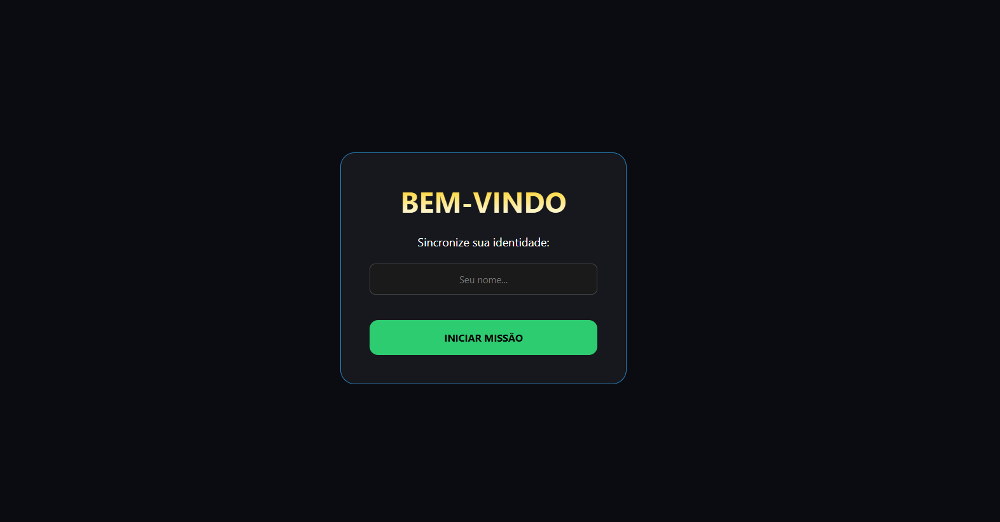

Meu Trabalho
Galeria
Momentos marcantes de palestras, workshops e sessões de coaching




Desenvolvedor Front-End especializado em React e JavaScript. Unindo a inteligência de mercado do varejo à arquitetura de software para projetar interfaces escaláveis e soluções que resolvem gargalos reais
Minha trajetória transita entre a linha de frente do varejo e a precisão do desenvolvimento de software. Como ex-Promotor de Vendas, aprendi a identificar dores operacionais e hoje utilizo o ecossistema JavaScript e React para escalar soluções reais.
No DevClub, desenvolvi uma visão de produto que vai além do código: crio ferramentas como o SmartPromoter, unindo inteligência de negócio à arquitetura limpa. Meu foco é transformar gargalos operacionais em interfaces eficientes, com resiliência e foco em entrega
React, JavaScript e outras Tecnologias
Desenvolvedor focado em converter vivência de mercado em código eficiente e interfaces centradas no usuário.
Momentos marcantes de palestras, workshops e sessões de coaching



Do conceito ao código: Uma jornada de projetos premiados, ferramentas de negócio e interfaces imersivas

Solução inteligente para gestão de PDV, conectando onde conectei a minha vivência no varejo com a eficiência do desenvolvimento Front-End

Meu projeto de estreia, focado na engenharia de dados e precisão algorítmica. Uma aplicação que uniu rigor técnico e usabilidade, conquistando o 4º lugar no concurso oficial do DevClub.

Plataforma educacional gamificada que transforma o estudo de História em uma jornada interativa. O projeto passa por uma reconstrução completa em React para elevar a escalabilidade e a experiência imersiva.
As ferramentas e tecnologias que utilizo para construir interfaces modernas, rápidas e focadas na experiência do usuário.
Lógica avançada e manipulação de DOM.
Criação de interfaces componentes e SPAs.
Layouts responsivos e design moderno.
Git, GitHub, Figma, VS Code.
Além do código: competências que garantem resultados e eficiência em cada projeto.
Capacidade analítica para identificar gargalos técnicos e transformar desafios complexos em soluções fluidas.
Foco total em código legível, modular e de fácil manutenção, seguindo os padrões modernos de Clean Code.
Curva de aprendizado rápida, comprovada pelo destaque em rankings técnicos e evolução constante em novas tecnologias.
Desenvolvimento voltado para a agilidade da interface (UX) e otimização para carregamento rápido em qualquer dispositivo.
Entendimento da dor do cliente final para projetar interfaces que não apenas funcionam, mas geram valor real ao negócio.
Habilidade em traduzir requisitos técnicos para uma linguagem simples, facilitando o alinhamento com toda a equipe.
O que dizem sobre minha ética de trabalho e comprometimento profissional.
Proprietário e Gestor, Seco Delivery Express
O Diogo sempre foi referência em excelência e honestidade. Na Seco Delivery, ele se destacou como o melhor na execução dos serviços, sempre comprometido com a qualidade e recebendo inúmeros elogios dos clientes pela sua transparência e empatia no atendimento.
Supervisora, PDV Quality
Sempre proativo e voltado para soluções, o Diogo me auxiliou diretamente na resolução de problemas complexos. É um colaborador que antecipa necessidades, ajuda o time e traz melhorias reais para os processos da equipe.
Joseph, Supervisor de Operações (Friboi)
O Diogo é um profissional de integridade rara: honesto, verdadeiro e extremamente educado. Como seu supervisor na operação Friboi, sempre o vi como referência em responsabilidade e respeito às normas, demonstrando um comprometimento exemplar com a excelência do serviço prestado."
Estou disponível para novos projetos, parcerias e oportunidades no mundo do desenvolvimento Front-end.
Sinta-se à vontade para me chamar em qualquer um dos canais abaixo. Costumo responder em até 24 horas.
diogoabraga.39@gmail.com
Caruaru, Pernambuco - Brasil
100% Home Office | Disponível para todo o Brasil